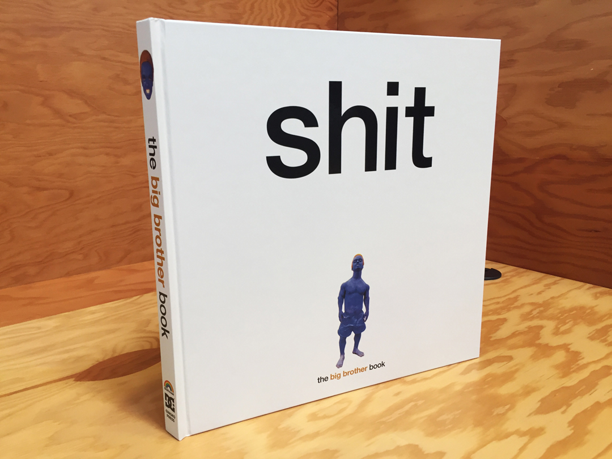
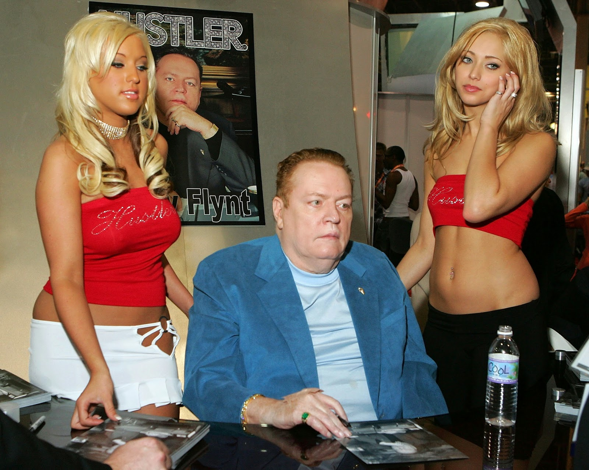

Big Brother Skateboarding Magazine Tribute Page
In the early Nineties being a skateboarder came with being a complete outsider, being different. So the full-on teen skate-nerd that I was, opening up the magazine pages was opening the door to a universe where being different and basically not giving a fuck was glorified and taken to extreme. A universe of skateboarding on and off the board, excitement and thrill, nonsense and dumb shit! just about everything you want growing up. So soon enough Big Brother became educational literature for a whole generation of skateboarders.
Big Brother consistently challenged notions of decency. They were wild to say the least. Among their reveared video releases were given the apt titles "poop," "crap," and "shit." Coincindentally, Big Brother is remembered fondly by peers that grew up reading it. This has led to a reimergence in its popularity via the nostalgia of aging skaters that can escape their aging temporarily by glorifying their long-gone youth. Recently, a book has been released to commemorate the magazine. Aptly named "shit," you can get more information about the book here

Eventually, champion of free speech and superfan of the depraved Larry Flynt purchased the magazine, which helped it continue to run amok in spite of financial difficulties. It was a magazine marketed to young people, but many vendors refused to carry it because if its vulgarity. Larry Flynt forked out 600k for the skate-smut rag, but surprisingly, the founder of Hustler toned down the nudity that once prevailed. This was likely an attempt to make the magazine more marketable. The writing and subject matter remained grotesque, but the decrease in nude images did increase sales for a time. Early back issues are available on .pdf here
